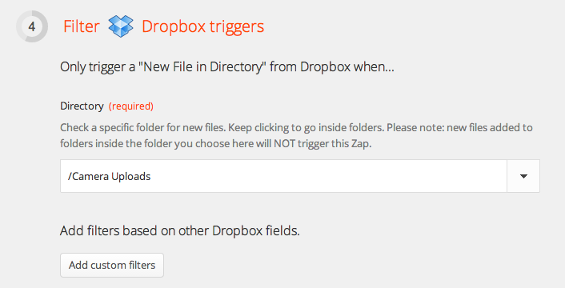
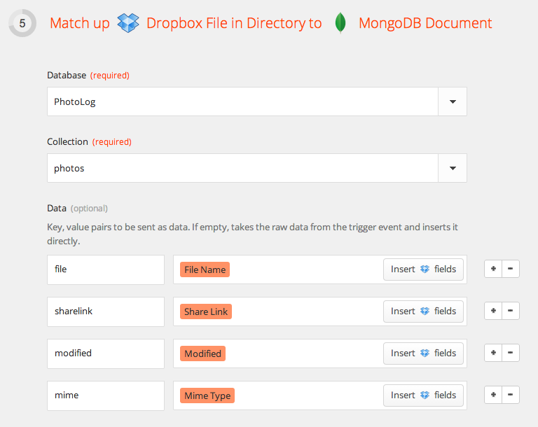
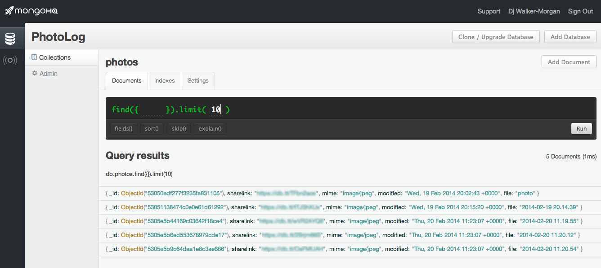

Over the last few weeks we’ve been showing you how you can use Internet of Things technology like Node-REDA Dropbox to MongoDB Trigger and ActionZapier will now guide us through the other steps needed. This includes connecting to Dropbox and MongoDB accounts. (Tip: set up your MongoDB database first – Zapier probes for the existence of the database when you test the account). We can then filter the Dropbox events. As pictures are uploaded to the Camera Uploads directory, we tell it to monitor that directory – we could set up a more specific filter in Zapier as it has access to file size, URLs, paths, modified dates and mime types but for now, we want to record all the new photos uploaded.
A Dropbox trigger watches a directoryNow we can create a MongoDB document , selecting the database and name of collection. If we don’t specify any fields, all the raw data Zapier has is copied across in the document, but you can also give field names and select particular items from that raw data as we do here.
Defining how a document is formed in MongoDB ready for insertingAnd all that’s left to do is to test the zap – Zapier finds sample data from the source to make that easier – give it a name and set it running. As we take photos and auto-upload them, the Zapier zap creates our document and after a while the collection starts building up:
The result of the zap is a collection of photo recordsSimple and effective. And it’s not just one way traffic. You can set up a zap that watches a MongoDB collection for new documents and trigger an action when they appear. It took just minutes to set a zap up to spot new photo documents in the database and send us a Google Talk message that told us the name of the file, a URL where we could view it and what its MIME type was.
Of course, this is only the start of what Zapier can do and combined with a database like MongoDB, you may find you don’t know where to start. The MongoDB Integrations page at Zapier offers up a range of zap templates that use MongoDB, so you can start archiving Stripe payments, Pingdom alerts, Gmail messages, RSS feeds, Github issues or HelpScout tickets quickly. The MongoDB integration can also trigger on more than just new documents being created; it can fire off when a new field is added to a document schema, when a new collection is added to a database or, depending on the MongoDB instance’s visibility, when a new database is added.
{kind=link}